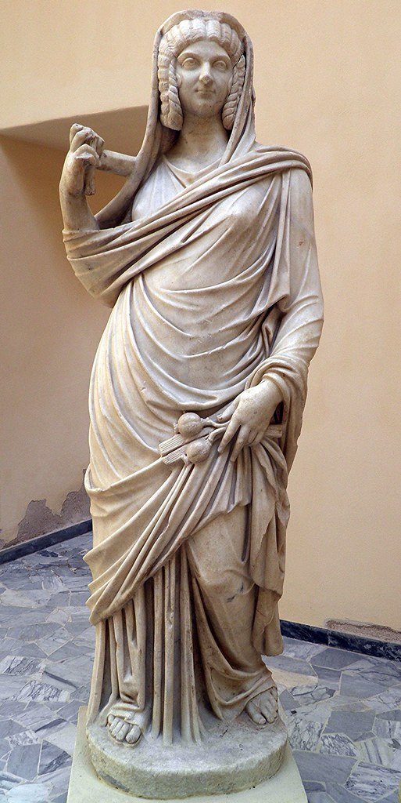
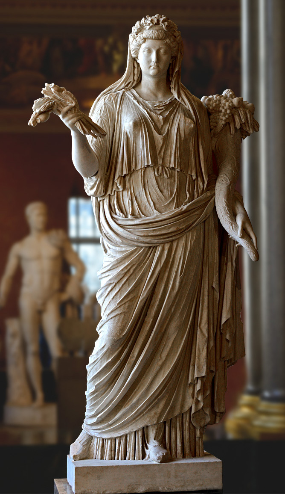

Le culte de la déesse Cérès et de sa relation avec les impératrices romaines durant le Haut Empire romain
Sources :
Augustin (1996) : La cité de Dieu : Livre VI : Les dieux païens, Publications de l’institut d’études augustiniennes, Paris (France). Chapitre XX, comparaison entre Libra et Ceres, culte d’Eleusis.
Cicéron (1886) : De natura deorum : Livre II, Hachette Bnf, Paris (France). Mention de Cérès et explication de son culte.
Dion Cassius : Histoire romaine, Les Belles Lettres, Paris (France).
Tacite (1990) : Annales. Tome I. Livres I-III, Les Belles Lettres, Paris (France).
Tite-Live : Histoire romaine, Les Belles Lettres, Paris (France).
Suétone : Vie des Douze Césars, Livre I à VI, Les Belles Lettres, Paris (France).
Varron (1954) : Varron de lingua Latina: livre V, Publications de la Faculté des Lettres de l’Université de Strasbourg 122, Paris (France).
Ouvrages :
Bartman, E (1999): Portraits of Livia. Imaging the imperial Woman in Augustan Rome, Cambridge University Press, Cambridge (Royaume Unis)
Beard M., North J et Price S (1998): Religions of Rome, Cambridge university press, Cambridge (Royaume-Unis)
MacIver, K (2001) : Empress and Goddess : Iulio-Claudian Women in the imperial Cult, Ontario (Canada)
Mikocki, T (1995) : Sub specie deae : les impératrices et princesses romaines assimilées à des déesses : étude iconologique, Rome (Italie)
Minaud G. (2012), Les vies de 12 femmes d'empereur romain - Devoirs, Intrigues & Voluptés, L'Harmattan, Paris (France)
Le Bonniec, H. (1958) : Le culte de Cérès à Rome : des origines à la fin de la République, Paris, (France)
Spaeth, B. S. (1996) : The Roman goddess Ceres, University of Texas Press. (Etat-Unis)
Wood, S. (1999) : Imperial women: a study in public images, 40 B.C. - A.D. 68, Leiden, Boston, Köln (Pays-Bas).
Article en ligne:
Grether, G. (1946) : “Livia and the Roman Imperial Cult”, Am. J. Philol., 67, 3, 222‑252
Hemelrijk, E. A. (2007). Local Empresses: Priestesses of the Imperial Cult in the Cities of the Latin West. Phoenix, 61(3/4), 318–349.
Mattingly, H. (1948). The Consecration of Faustina the Elder and Her Daughter. The Harvard Theological Review, 41(2), 147–151.
Rolle, A. (2022) : “Coming Home: Varro’s Antiquitates rerum divinarum and the Canonisation of Roman Religion”, in : Canonisation as Innovation 2022, 263‑284.
Spaeth, B.S. (1994) : “The Goddess Ceres in the Ara Pacis Augustae and the Carthage Relief”, Am. J. Archaeol., 98, 1, 65‑100
Stirling, L.M. (2012) : “A New Portrait of Livia from Thysdrus (El Jem, Tunisia)”, Am. J. Archaeol., 116, 4, 625‑647.
Sitographie :
-FORUM ANCIENT COINS, Julia Domna, Augusta 194- 8 april 217 A.D. [en ligne]
https://www.forumancientcoins.com/catalog/roman-and-greek-coins.asp?param=13168q00.jpg&vpar=18&zpg=118694&fld=https://www.forumancientcoins.com/Coins3/
[consulté le 15/10/2023]
-DICTIONNARY OF THE ANCIENT COIN, Ceres Avg. [en ligne].
forumancientcoins.com/Dictionary_Of_Roman_Coins/dictionaryByPage.asp?page=196
[Consulté le 15/10/2023]
-NUMISMA, Denier de Faustine l’ancienne – Cérès. [en ligne].
https://fr.numista.com/catalogue/pieces260455.html
[consulté le 14/10/2023]
-THE LATIN LIBRARY, M. Terenti Varronis de lingua Latina fragmenta [en ligne]. 2023.
https://www.thelatinlibrary.com/varro.htlm
[consulté le 15/10/2023].
Figures:
Statue de l’impératrice Julia Domna en Cérès, IIIè siècle, Musée d’Ostie

Statue de l’impératrice Sabine en Cérès, IIè siècle, Musée d’Ostie
Statue de l’impératrice Sabine en Cérès, IIè siècle, Musée du Louvre (beaucoup de rénovation moderne)
Statue de l’impératrice Livie en Cérès, Iè siècle, musée du Louvre
